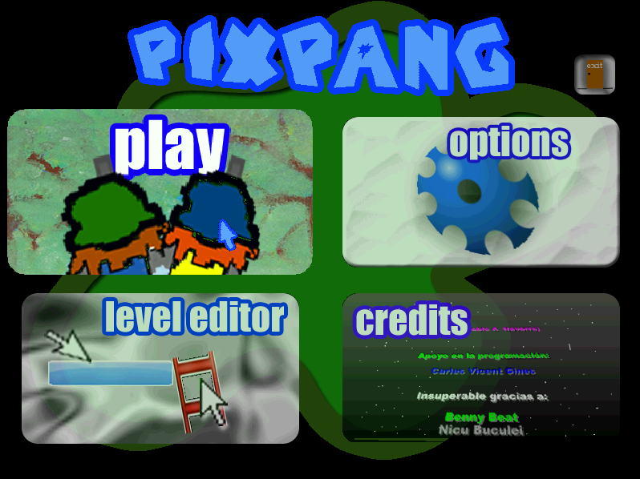
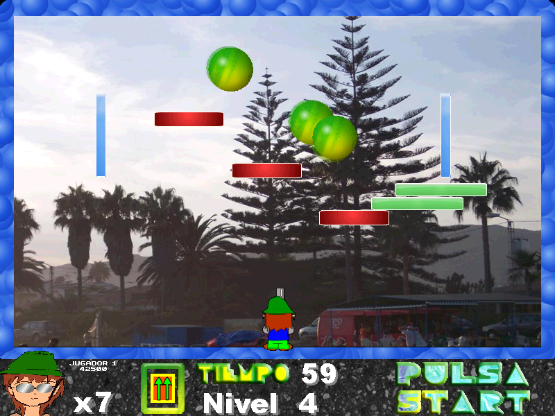

Descargas
Información
Guías
PiX Pang: 1.6c
Esta versión ya se va acercando a la 2.0, pero aún presenta sprites (algunos) y soundtracks viejos.
Fuera de eso, no tiene muchas diferencias de la 1.6d, aunque en sí, hay demasiados cambios comparado a la 1.6b.
Desconozco en que versión de Fénix fue compilado. No funciona en Windows Vista ni en adelante.

Menú

Ingame
Curiosidades:
- En el código fuente, se puede encontrar un jefe desechado llamado "clip", siendo el clip de Microsoft Office.
- Comparado a la 1.6d, tiene una intro un poco más desarrollada.